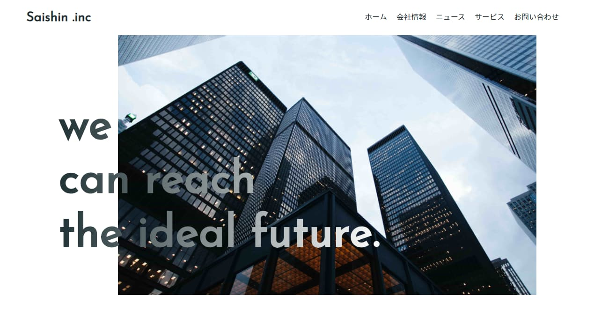
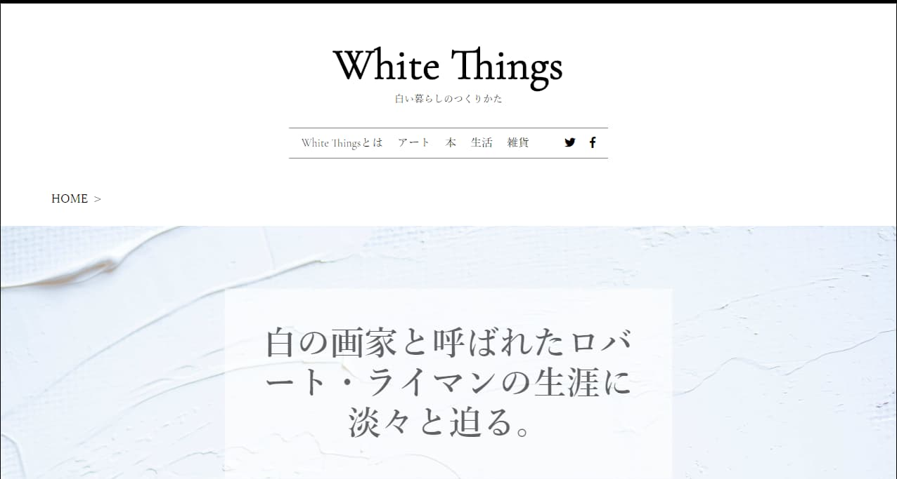
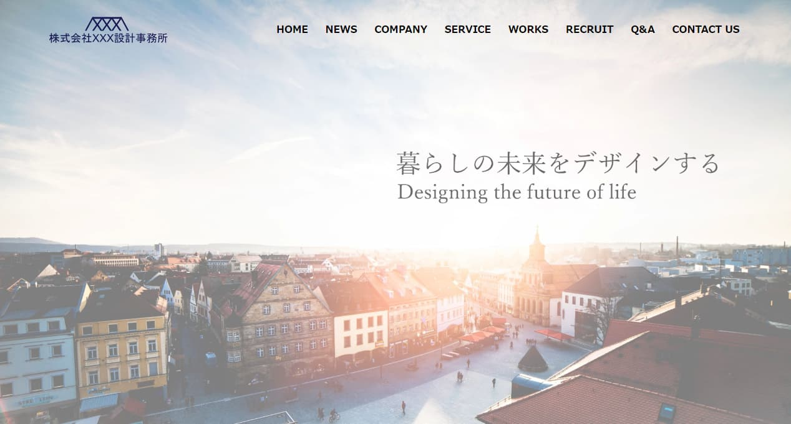
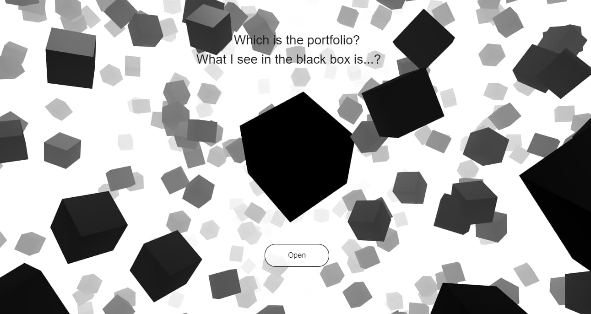
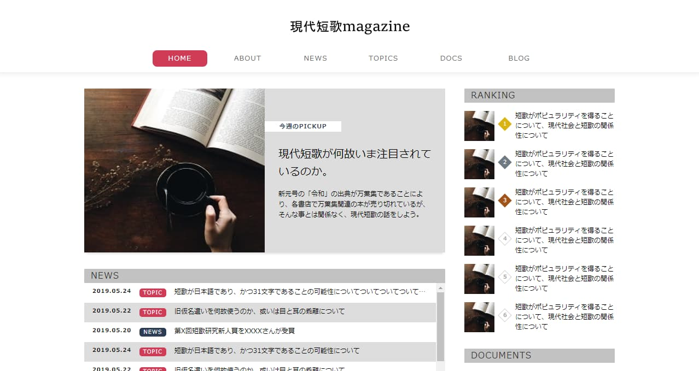

I believe
in
what I see.
my keywords
web : HTML5, CSS3, JavaScript
趣味 : 小説や詩歌
これから : UI, UX, Vue.js
ABOUT
1996年生まれ。
21年よりフロントエンドエンジニアとしてお仕事を始めた。
趣味は文学全般で、小説や詩歌が好き。
SKILLS
-
01
HTML5
タグの使い所やCSSの実装し易さを意識したコーディングをしています。クラスは、BEM規則でSASSを書くことを前提に付けています。
-
02
CSS3
SASS(scss)で書いており、コンパイルはGulp、或いはVScodeの拡張機能を用いています。レスポンシブにも対応可能。
-
03
JavaScript
jQueryやGulp4, Three.js, Barba.js, Swiper.jsの使用経験があります。これからVue.jsに手を出す予定です。
-
04
WordPress
0からwebメディアサイト、コーポレートサイトを制作した経験があります。開発環境はxampp。Dockerに興味あり。
-
05
Photoshop
大まかなデザインを考える時や画像加工に使っています。
-

本サイト
改めてポートフォリオサイトを作り直しました。スクロールに応じたアクションを幾つか取り入れてみました。
HTML5/CSS3/jQuery/Gulp4を用いて制作。
レスポンシブ対応済み。(制作日：2019-12)
Click to visit -

コーポレートサイト(WP)
WordPressを用いて、0からコーポレートサイトを構築しました。
HTML5/CSS3/JavaScript/Swiper.js/WordPressを用いて制作。
レスポンシブ対応済み。(制作日：2019-12)
Click to visit -

White Things
テンプレートは使わずに0からテーマを作成し、WEBメディアサイトを構築しました。
HTML5/CSS3/JavaScript/PHP/WordPressを用いて制作。
レスポンシブ対応済み。(制作日：2019-08)
Click to visit -

コーポレートサイト
Barba.jsを試してみたくなり、奥村設計事務所様(http://www.om-s.co.jp/)のサイトデザインを参考にさせて頂きつつ実装しました。
HTML5/CSS3/jQuery/Barba.jsを用いて制作。
レスポンシブ対応済み。(制作日：2019-07)
Click to visit -

旧ポートフォリオサイト
Three.jsを用いてブラックボックスが回るサイトを作りました。「人間はブラックボックスである」というのがコンセプト。
HTML5/CSS3/jQuery/Three.jsを用いて制作。
レスポンシブ対応済み。(制作日：2019-06)
Click to visit -

メディアトップページ
練習としてTOPページのみ制作
HTML5/CSS3/jQueryを用いて制作。
レスポンシブ対応済み。(制作日：2019-05)
Click to visit
CONTACT
E-mail : ryota0084812[at]yahoo.co.jp